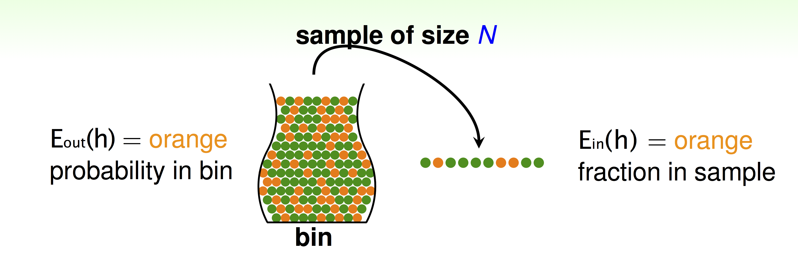

TensorFlow(5): Vector and Matrix Product in Numpy and TensorFlow
Numpy
Following are common vector and matrix product operations in Numpy, they are quite simple and straightforward:
Inner Product \(\quad a^Tb\quad \):
np.inner(a,b)Outer Product \(\quad ab^T\quad \):
np.outer(a,b)Dot Product \(\quad a \cdot b = \sum a_ib_i\quad \):
np.dot(a,b)Elementwise Product \(\quad c_i = a_ib_i\quad \):
np.multiply()orc=a*b
Note: inner product is defined on vector spaces over a field ùïÇ (finite or infinite dimensional). Dot product refers specifically to the product of vectors in \(‚Ñù^n\)
The difference between the following implementations of the dot/inner/outer/elementwise product are demonstrated as follows:
import numpy as np
W = np.ones((2, 7), dtype='float32')
x1 = np.array([9, 2, 5, 0, 0, 7, 5])
x2 = np.array([9, 2, 2, 9, 0, 9, 2])
print('vector dot product', np.dot(x1,x2)) # dot product
print('inner', np.inner(x1,x2)) # inner product
print('outter', np.outer(x1,x2)) # outter product
print('element-wsie', np.multiply(x1,x2)) # Element-wise product
print('element-wsie', x1*x2) # Element-wise product
print('matrix dot product', np.dot(W, x1)) # dot product
vector dot product 168
inner 168
outter [[81 18 18 81 0 81 18]
[18 4 4 18 0 18 4]
[45 10 10 45 0 45 10]
[ 0 0 0 0 0 0 0]
[ 0 0 0 0 0 0 0]
[63 14 14 63 0 63 14]
[45 10 10 45 0 45 10]]
element-wsie [81 4 10 0 0 63 10]
element-wsie [81 4 10 0 0 63 10]
matrix dot product [ 28. 28.]
For detailed explanation, see here;
TensorFlow
Vector inner/outer Product are a bit complex in TensorFlow.
import tensorflow as tf
import numpy as np
x = tf.Variable([[1, -2, 3]], tf.float32, name='x')
y = tf.Variable([[-1, 2, -3]], tf.float32, name='y')
## inner product
inner_product1 = tf.reduce_sum(tf.multiply(x, y))
inner_product2 = tf.matmul(x, y, transpose_a=False, transpose_b= True) # different from inner_product1
## outer product
outer_product2 = tf.matmul(x, y, transpose_a= True)
## matrix dot product
X = tf.constant(np.random.randn(3,3), name='X')
W = tf.constant(np.random.randn(3,3), name='W')
matrix_product = tf.matmul(W, X)
sess = tf.InteractiveSession()
init_op = tf.global_variables_initializer()
# run
sess.run(init_op)
print(sess.run(inner_product1))
print(sess.run(inner_product2))
print(sess.run(outer_product2))
print(sess.run(matrix_product))
-14
[[-14]]
[[-1 2 -3]
[ 2 -4 6]
[-3 6 -9]]
[[-0.88722509 -0.94128018 -2.1999658 ]
[-0.67967623 1.33193446 -0.75612585]
[ 0.31741623 1.3271727 -0.04311113]]
Machine Learning Foundations - Mathematical Foundations
- (1) The Learning Problem
- (2) Learning to answer Yes or No
- (3) Types of Learning
- (4) Feasibility of Learning
- (5) Training versus Testing
- (6) Theory of generalization
- (7) VC dimension
- (8): Noise and error
The course, Machine Learning Foundations - Mathematical Foundations(机器学习基石), is taught by Hsuan-Tien Lin on Coursera (course info page).
As the name of the course indicates, the course teaches the most fundamental algorithmic, theoretical, mathematical background of machine learning.
The article summaries the key concepts and conclusions in the course. Each section in the article corresponding to one chapter in the course.
(1) The Learning Problem
Key Essence of Machine Learning
Machine Learning: improving some performance measure with experience computed from data
- exists some 'underlying pattern' to be learned — so 'performance measure' can be improved
- but no programmable (easy) definition — so 'ML' is needed
- somehow there is data about the pattern — so ML has some 'inputs' to learn from
Formalize the Learning Problem
Basic Notations:
- input: \(x\in\mathcal{X}\)
- output: \(y\in\mathcal{Y}\)
- unknown pattern to be learned \(\Leftrightarrow\) target function:
\(f:\mathcal{X}\rightarrow\mathcal{Y}\) - data \(\Leftrightarrow\) training examples: \(\mathcal{D}={(x_1,y_1),(x_2,y_2),...,(x_N,y_N)}\)
- hypothesis \(\Leftrightarrow\) skill with hopefully good performance: \(g: \mathcal{X}\rightarrow \mathcal{Y}\)
- final hypothesis: \(\mathcal{g}\approx f\)
Machine Learning: use data \(\mathcal{D}\) to compute hypothesis \(g\) that approximates target \(f\).

Machine Learning and other Fields
- Machine Learning: use data to compute hypothesis \(g\) that approximates target \(f\)
- Data Mining: Use (huge) data to find property that is interesting
\(\Longleftrightarrow\)If 'interesting property' same as 'hypothesis that approximate target', Machine Learning = Data Mining
\(\Longleftrightarrow\) If 'interesting property' related to 'hypothesis that approximate target', data mining can help machine learning.
\(\Longleftrightarrow\) traditional data mining also focuses on efficient computation in large database.
(2) Learning to answer Yes or No
Perceptron Hypothesis Set
Vector Form of Perceptron Hypothesis:
\[h(x) = \text{sign}(\sum\limits_{i=0}^dw_ix_i)=\text{sign}(W^Tx)\]
Perceptron Learning Algorithm(PLA):

Pocket Algorithm: modify PLA algorithm by keeping best weights in pocket

(3) Types of Learning
Learning with Different Output Space
- binary classification: \(\mathcal{Y}=\{-1,+1\}\)
- multiclass classification: \(\mathcal{Y}=\{1, 2,..., K\}\)
- regression: \(\mathcal {Y} =\mathbb{R}\)
- structured learning: \(\mathcal{Y}=\) structures
Learning with Different Data Label
- supervised: all \(y_n\)
- unsupervised: no \(y_n\)
- semi-supervised: some \(y_n\)
- reinforcement: implicit \(y_n\) by goodness (\(\hat y_n\))
Learning with Different Protocol
Protocol \(\Longleftrightarrow\) Learning Philosophy.
- batch: all known data
- online: sequential (passive) data
- active: strategically-observed data
Learning with Different Input Space
- concrete: sophisticated (and related) physical meaning e.g. user features(age, sex, education level)
- raw: simple physical meaning e.g. image features
- abstract: no (or little) physical meaning e.g. user/image IDs
(4) Feasibility of Learning
Learning outside training examples
No Free Lunch: Learning from \(D\) (\(D\): training examples) (to infer something outside \(D\)) is doomed to fail if any unknown \(f\) can happen.
- \(g\approx f\) inside \(D\): Possible!
- \(g\approx f\) outside \(D\): Impossible!
In and out of sample error
For any fixed \(h\), in 'big' data (N large), in-sample error \(E_{in}(h)\) is probably close to out-of-sample error \(E_{out}(h)\) (within \(\epsilon\)):
\(P(|E_{in}(h)-E_{out}(h)|> \epsilon) \le 2\exp(-2\epsilon^2N)\)
The equation above is called Hoeffding's Inequality. The statement \(E_{in}(h)=E_{out}(h)\) is probably approximately correct (PAC, 大概近似正确).
If large \(N\), we can probably infer unknown \(E_{out}(h)\) by known \(E_{in}(h)\).
in-sample error \(E_{in}(h)\) denotes orange fraction in sample, out-of-sample error \(E_{out}(h)\) denotes orange probability in bin, When we want to infer the orange probability in bin.


Connection to Real Learning
Bad data for One \(h\):
\(E_{out}(h)\) and \(E_{in}(h)\) far away: e.g. \(E_{out}\) big (far from \(f\)), but \(E_{in}\) small (correct on most examples).
Bad data for many \(h\):
\(\Leftrightarrow\) no 'freedom of choices' by learning algorithm \(\mathcal{A}\)
\(\Leftrightarrow\) there exists some \(h\) such that \(E_{out}(h)\) and \(E_{in}(h)\) far away
Bound of BAD data
Form \(M\) hypotheses, what is the bound of \(\mathbb{P}_{\mathcal{D}} [\text{BAD} \; \mathcal{D}]\)

The union bound WIKI (布尔不等式), also known as Boole's inequality, says that for any finite or countable set of events, the probability that at least one of the events happens is no greater than the sum of the probabilities of the individual events.
The Statistical Learning Flow
If \(|\mathcal{H}|=M\) finite, \(N\) large enough, for whatever \(g\) picked by \(\mathcal{A}\), \(E_{out}(g)\approx E_{in}(g)\)
if \(\mathcal{A}\) finds one \(g\) with \(E_{in}(g)\approx 0\),
PAC gaurantee for \(E_{out}(g)\approx 0\) \(\rightarrow\) learning possilbe!
(5) Training versus Testing
For batch and supervised binary classification, \(g\approx f\Longleftrightarrow E_{out}(g)\approx 0\) achieved through \(E_{out}(g)\approx E_{in}(g)\) and \(E_{in}(g)\approx 0\).
In order to achieve two conditions above, learning split to two central questions:
- Can we make sure that \(E_{out}(g)\) is close enough to \(E_{in}(g)\)?
- Can we make \(E_{in}(g)\) small enough?
In order to understand trade-off for 'right' \(\mathcal{H}\), we establish a finite quantity that replace \(M\),
\[\mathbb{P}[|E_{in}9g)-E_{out}(g)|>\epsilon] \le 2\cdot m_\mathcal{H} \cdot \exp(-2\epsilon^2 N)\]
Dichotomy
Define hypothesis set \(\mathcal{H}\):
\(\mathcal{H}=\{\text{hypothesis}\quad h: \mathcal{X}\rightarrow{\text{x,o}}\}\)
And we call hypothesis 'limited' to the eyes of \(x_1, x_2,..., x_N\) a dichotomy:
\[\mathcal{H}(x_1,x_2,...,x_N)=\{(h(x_1),h(x_2),...,h(x_N)) \quad | \quad h \in \mathcal{H} \}\]
One can think of the dichotomies \(\mathcal{H}(x_1,x_2,...,x_N)\) as a set of hypotheses just like \(\mathcal{H}\) is, except that the hypotheses are seen through the eyes of \(N\) points only.
Note: hypotheses \(\mathcal{H}\) and dichotomy \(\mathcal{H}(x_1,x_2,...,x_N)\) are different!
Growth function
Growth function is the maximum number of dichotomies that can be generated by \(\mathcal{H}\) on any \(N\) points:
\[m_\mathcal{H}(N) = \max\limits_{x_1,x_2,...,x_N\in\mathcal{X}}|\mathcal{H}(x_1,x_2,...,x_N)|\]
Growth function is finite, its upper-bound is \(2^N\).
Growth functions in different situation:
- positive rays: \(m_\mathcal{H}(N)=N+1\)
- positive intervals: \(m_\mathcal{H}(N)=\frac{1}{2}N^2+\frac{1}{2}N+1\)
- convex sets: \(m_\mathcal{H}(N)=2^N \)
- 2D perceptrons: \(m_\mathcal{H}(N)=2^N \text{in some cases}\)
Shatter and Break point
If no \(k\) inputs can be shattered by \(\mathcal{H}\) , call \(k\) a break point for \(\mathcal{H}\).
if \(m_H(K) < 2^k\), call k a break point for \(\mathcal{H}\).
- since \(k\) is a break point, \(k+1, k+2, k+3,...,\) also break points
minimum break points for different \(\mathcal{H}\):
- positive rays: k=2
- positive intervals: k=3
- convex sets: none
- 2D perceptrons: k=4
(6) Theory of generalization
Bounding Function
Bounding Function \(B(N,k)\) is maximum possible \(m_\mathcal{H}(N)\) when break point \(=k\).
\[B(N,k) \le \sum\limits_{i=0}^{k-1} \left(\stackrel N i\right)\]
For fixed \(k, B(N,k)\) upper bounded by \(ploy(N)\), \(\rightarrow m_{\mathcal{H}}(N)\) is \(poly(N)\) _if break point exists_.
VC Bound
When N large enough,
\[P[\exists h\in \mathcal{H} \quad s.t.\quad |E_{in}(h)-E_{out}(h)|> \epsilon]\le 4 m_\mathcal{H}(2N)\exp(-\frac{1}{8}\epsilon^2N)\]
The above equation called _Vapnik-Chervonenkis (VC) bound_.
(7) VC dimension
VC dimension, the formal name of maximum non-break point, denoted \(d_{VC}(\mathcal{H})\), is
\[\text{largest N for which } m_{\mathcal{H}}(N)=2^N\]
- positive rays: \(d_{VC}=1\)
- positive intervals: \(d_{VC}=2\)
- convex sets: \(d_{VC}= \infty \)
- 2D perceptrons: \(d_{VC}=3\)
- d dimension Perceptrons: \(d_{VC}=d+1\)
Interpreting VC Dimension


(8): Noise and error
Noise in \(x\) and \(y\):

NOTE: VC holds for \(x \stackrel{i.i.d}{\backsim} P(x), y \stackrel{i.i.d}{\backsim} P(y|x)\)

Error Measure
Two Important Pointwise Error Measures
0/1 error(often for classification): err(\(\tilde y,y)=[\tilde y\ne y]\)
squared error(often for regression): err(\(\tilde y,y)=(\tilde y\ne y)^2\)
Machine Learning(9): Anomaly Detection AND Recommender System
[1] Anomaly Detection
Problem Motivation
Just like in other learning problems, we are given a dataset \({x^{(1)}, x^{(2)},\dots,x^{(m)}}\).
We are then given a new example, \(x_{test}\), and we want to know whether this new example is abnormal/anomalous.
We define a "model" p(x) that tells us the probability the example is not anomalous. We also use a threshold ϵ (epsilon) as a dividing line so we can say which examples are anomalous and which are not.
A very common application of anomaly detection is detecting fraud:
\(x^{(i)} =\) features of user i's activities
Model p(x) from the data.
Identify unusual users by checking which have p(x)<ϵ.
If our anomaly detector is flagging too many anomalous examples, then we need to decrease our threshold ϵ
Gaussian Distribution
The Gaussian Distribution is a familiar bell-shaped curve that can be described by a function \(\mathcal{N}(\mu,\sigma^2)\)
Let x∈ℝ. If the probability distribution of x is Gaussian with mean μ, variance \(\sigma^2\), then:
\(x \sim \mathcal{N}(\mu, \sigma^2)\)
The little ∼ or 'tilde' can be read as "distributed as."
The Gaussian Distribution is parameterized by a mean and a variance.
Mu, or μ, describes the center of the curve, called the mean. The width of the curve is described by sigma, or σ, called the standard deviation.
The full function is as follows:
\(\large p(x;\mu,\sigma^2) = \dfrac{1}{\sigma\sqrt{(2\pi)}}e^{-\dfrac{1}{2}(\dfrac{x - \mu}{\sigma})^2}\)
We can estimate the parameter μ from a given dataset by simply taking the average of all the examples:
\(\mu = \dfrac{1}{m}\displaystyle \sum_{i=1}^m x^{(i)}\)
We can estimate the other parameter, \(\sigma^2\), with our familiar squared error formula:
\(\sigma^2 = \dfrac{1}{m}\displaystyle \sum_{i=1}^m(x^{(i)} - \mu)^2\)

Algorithm
Given a training set of examples, \(\lbrace x^{(1)},\dots,x^{(m)}\rbrace\) where each example is a vector, \(x \in \mathbb{R}^n\).
\(p(x) = p(x_1;\mu_1,\sigma_1^2)p(x_2;\mu_2,\sigma^2_2)\cdots p(x_n;\mu_n,\sigma^2_n)\)
In statistics, this is called an "independence assumption" on the values of the features inside training example x.
More compactly, the above expression can be written as follows:
\(= \displaystyle \prod^n_{j=1} p(x_j;\mu_j,\sigma_j^2)\)
The algorithm
Choose features \(x_i\) that you think might be indicative of anomalous examples.
Fit parameters \(\mu_1,\dots,\mu_n,\sigma_1^2,\dots,\sigma_n^2\)
Calculate \(\mu_j = \dfrac{1}{m}\displaystyle \sum_{i=1}^m x_j^{(i)}\)
Calculate \(\sigma^2_j = \dfrac{1}{m}\displaystyle \sum_{i=1}^m(x_j^{(i)} - \mu_j)^2\)
Given a new example x, compute p(x):
\(p(x) = \displaystyle \prod^n_{j=1} p(x_j;\mu_j,\sigma_j^2) = \prod\limits^n_{j=1} \dfrac{1}{\sqrt{2\pi}\sigma_j}exp(-\dfrac{(x_j - \mu_j)^2}{2\sigma^2_j})\)
Anomaly if p(x)<ϵ
A vectorized version of the calculation for μ is \(\mu = \dfrac{1}{m}\displaystyle \sum_{i=1}^m x^{(i)}\). You can vectorize \(\sigma^2\) similarly.
Developing and Evaluating an Anomaly Detection System
To evaluate our learning algorithm, we take some labeled data, categorized into anomalous and non-anomalous examples ( y = 0 if normal, y = 1 if anomalous).
Among that data, take a large proportion of good , non-anomalous data for the training set on which to train p(x).
Then, take a smaller proportion of mixed anomalous and non-anomalous examples (you will usually have many more non-anomalous examples) for your cross-validation and test sets.
For example, we may have a set where 0.2% of the data is anomalous. We take 60% of those examples, all of which are good (y=0) for the training set. We then take 20% of the examples for the cross-validation set (with 0.1% of the anomalous examples) and another 20% from the test set (with another 0.1% of the anomalous).
In other words, we split the data 60/20/20 training/CV/test and then split the anomalous examples 50/50 between the CV and test sets.
Algorithm evaluation:
Fit model p(x) on training set \(\lbrace x^{(1)},\dots,x^{(m)} \rbrace\)
On a cross validation/test example x, predict:
If p(x) < ϵ ( anomaly ), then y=1
If p(x) ≥ ϵ ( normal ), then y=0
Possible evaluation metrics (see "Machine Learning System Design" section):
True positive, false positive, false negative, true negative.
Precision/recall
\(F_1\) score
Note that we use the cross-validation set to choose parameter ϵ
Anomaly Detection vs. Supervised Learning
When do we use anomaly detection and when do we use supervised learning?
Use anomaly detection when...
We have a very small number of positive examples (y=1 ... 0-20 examples is common) and a large number of negative (y=0) examples.
We have many different "types" of anomalies and it is hard for any algorithm to learn from positive examples what the anomalies look like; future anomalies may look nothing like any of the anomalous examples we've seen so far.
Use supervised learning when...
We have a large number of both positive and negative examples. In other words, the training set is more evenly divided into classes.
We have enough positive examples for the algorithm to get a sense of what new positives examples look like. The future positive examples are likely similar to the ones in the training set.
Choosing What Features to Use
The features will greatly affect how well your anomaly detection algorithm works.
We can check that our features are gaussian by plotting a histogram of our data and checking for the bell-shaped curve.
Some transforms we can try on an example feature x that does not have the bell-shaped curve are:
log(x)
log(x+1)
log(x+c) for some constant
\(\sqrt{x}\)
\(x^{1/3}\)
We can play with each of these to try and achieve the gaussian shape in our data.
There is an error analysis procedure for anomaly detection that is very similar to the one in supervised learning.
Our goal is for p(x) to be large for normal examples and small for anomalous examples.
One common problem is when p(x) is similar for both types of examples. In this case, you need to examine the anomalous examples that are giving high probability in detail and try to figure out new features that will better distinguish the data.
In general, choose features that might take on unusually large or small values in the event of an anomaly.
Multivariate Gaussian Distribution
The multivariate gaussian distribution is an extension of anomaly detection and may (or may not) catch more anomalies.
Instead of modeling \(p(x_1),p(x_2),\dots\) separately, we will model p(x) all in one go. Our parameters will be: \(\mu \in \mathbb{R}^n\) and \(\Sigma \in \mathbb{R}^{n \times n}\)
\(p(x;\mu,\Sigma) = \dfrac{1}{(2\pi)^{n/2} |\Sigma|^{1/2}} exp(-1/2(x-\mu)^T\Sigma^{-1}(x-\mu))\)
The important effect is that we can model oblong gaussian contours, allowing us to better fit data that might not fit into the normal circular contours.
Varying Σ changes the shape, width, and orientation of the contours. Changing μ will move the center of the distribution.
Check also:
- The Multivariate Gaussian Distribution http://cs229.stanford.edu/section/gaussians.pdf Chuong B. Do, October 10, 2008.
Following examples illustrate the basic meaning of parameters in multivariable gaussian distribution:
mean = [0, 0]
cov = [[1, 0], [0, 1]] # diagonal covariance
# Draw random samples from a multivariate normal distribution
x, y = np.random.multivariate_normal(mean, cov, 5000).T
plt.plot(x, y, 'x',color='y')
plt.axis('equal')
plt.hold
# change mean
mean = [0, 10]
x, y = np.random.multivariate_normal(mean, cov, 5000).T
plt.plot(x, y, '.', color='b')
# change variances
mean = [10, 10]
cov = [[1, 0], [0, 10]] # diagonal covariance
x, y = np.random.multivariate_normal(mean, cov, 5000).T
plt.plot(x, y, '-', color='r')
plt.show()

Anomaly Detection using the Multivariate Gaussian Distribution
When doing anomaly detection with multivariate gaussian distribution, we compute μ and Σ normally. We then compute p(x) using the new formula in the previous section and flag an anomaly if p(x) < ϵ.
The original model for p(x) corresponds to a multivariate Gaussian where the contours of \(p(x;\mu,\Sigma)\) are axis-aligned.
The multivariate Gaussian model can automatically capture correlations between different features of x.
However, the original model maintains some advantages: it is computationally cheaper (no matrix to invert, which is costly for large number of features) and it performs well even with small training set size (in multivariate Gaussian model, it should be greater than the number of features for Σ to be invertible).
[2] Recommender Systems
Problem Formulation
Recommendation is currently a very popular application of machine learning.
Say we are trying to recommend movies to customers. We can use the following definitions
\(n_u =\) number of users
\(n_m =\) number of movies
\(r(i,j) = 1\) if user \(j\) has rated movie \(i\)
\(y(i,j) =\) rating given by user \(j\) to movie \(i\) (defined only if \(r(i,j)=1\))
Content Based Recommendations
We can introduce two features, \(x_1\) and \(x_2\) which represents how much romance or how much action a movie may have (on a scale of 0−1).
One approach is that we could do linear regression for every single user. For each user \(j\), learn a parameter \(\theta^{(j)} \in \mathbb{R}^3\). _Predict user \(j\) as rating movie \(i\) with \((\theta^{(j)})^Tx^{(i)}\) stars_.
\(\theta^{(j)} =\) parameter vector for user \(j\)
\(x^{(i)} =\) feature vector for movie \(i\)
For user \(j\), movie \(i\), predicted rating: \((\theta^{(j)})^T(x^{(i)})\)
- \(m^{(j)} =\) number of movies rated by user \(j\)
To learn \(\theta^{(j)}\), we do the following
\(min_{\theta^{(j)}} = \dfrac{1}{2}\displaystyle \sum_{i:r(i,j)=1} ((\theta^{(j)})^T(x^{(i)}) - y^{(i,j)})^2 + \dfrac{\lambda}{2} \sum_{k=1}^n(\theta_k^{(j)})^2\)
This is our familiar linear regression. The base of the first summation is choosing all \(i\) such that \(r(i,j) = 1\).
To get the parameters for all our users, we do the following:
\(min_{\theta^{(1)},\dots,\theta^{(n_u)}} = \dfrac{1}{2}\displaystyle \sum_{j=1}^{n_u} \sum_{i:r(i,j)=1} ((\theta^{(j)})^T(x^{(i)}) - y^{(i,j)})^2 + \dfrac{\lambda}{2} \sum_{j=1}^{n_u} \sum_{k=1}^n(\theta_k^{(j)})^2\)
We can apply our linear regression gradient descent update using the above cost function.
The only real difference is that we eliminate the constant \(\dfrac{1}{m}\).
Feature Finder
It can be very difficult to find features such as "amount of romance" or "amount of action" in a movie. To figure this out, we can use feature finders .
We can let the users tell us how much they like the different genres, providing their parameter vector immediately for us.
To infer the features from given parameters, we use the squared error function with regularization over all the users:
\(min_{x^{(1)},\dots,x^{(n_m)}} \dfrac{1}{2} \displaystyle \sum_{i=1}^{n_m} \sum_{j:r(i,j)=1} ((\theta^{(j)})^T x^{(i)} - y^{(i,j)})^2 + \dfrac{\lambda}{2}\sum_{i=1}^{n_m} \sum_{k=1}^{n} (x_k^{(i)})^2\)
You can also randomly guess the values for theta to guess the features repeatedly. You will actually converge to a good set of features.
Collaborative Filtering Algorithm
To speed things up, we can simultaneously minimize our features and our parameters:

\(J(x,\theta) = \dfrac{1}{2} \displaystyle \sum_{(i,j):r(i,j)=1}((\theta^{(j)})^Tx^{(i)} - y^{(i,j)})^2 + \dfrac{\lambda}{2}\sum_{i=1}^{n_m} \sum_{k=1}^{n} (x_k^{(i)})^2 + \dfrac{\lambda}{2}\sum_{j=1}^{n_u} \sum_{k=1}^{n} (\theta_k^{(j)})^2\)
It looks very complicated, but we've only combined the cost function for \(\theta\) and the cost function for \(x\).
Because the algorithm can learn them itself, the bias units where \(x_0=1\) have been removed, therefore \(x\in \mathcal{R}^ n\) and \(\theta \in \mathcal{R} ^n\).
These are three steps in the algorithm:
Initialize \(x^{(i)},...,x^{(n_m)},\theta^{(1)},...,\theta^{(n_u)}\) to small random values. This serves to break symmetry and ensures that the algorithm learns features \(x^{(i)},...,x^{(n_m)}\) that are different from each other.
Minimize \(J(x^{(i)},...,x^{(n_m)},\theta^{(1)},...,\theta^{(n_u)})\) using gradient descent (or an advanced optimization algorithm). E.g. for every \(j=1,...,n_u,i=1,...n_m\):
\(x_k^{(i)} := x_k^{(i)} - \alpha\left (\displaystyle \sum_{j:r(i,j)=1}{((\theta^{(j)})^T x^{(i)} - y^{(i,j)}) \theta_k^{(j)}} + \lambda x_k^{(i)} \right)\)
\(\theta_k^{(j)} := \theta_k^{(j)} - \alpha\left (\displaystyle \sum_{i:r(i,j)=1}{((\theta^{(j)})^T x^{(i)} - y^{(i,j)}) x_k^{(i)}} + \lambda \theta_k^{(j)} \right)\)
For a user with parameters θ and a movie with (learned) features x, predict a star rating of \(\theta^Tx\).
Vectorization: Low Rank Matrix Factorization
Given matrices X (each row containing features of a particular movie) and Θ (each row containing the weights for those features for a given user), then the full matrix Y of all predicted ratings of all movies by all users is given simply by: \(Y = X\Theta^T\).
Predicting how similar two movies i and j are can be done using the distance between their respective feature vectors x. Specifically, we are looking for a small value of \(||x^{(i)} - x^{(j)}||\).
Implementation Detail: Mean Normalization
If the ranking system for movies is used from the previous lectures, then new users (who have watched no movies), will be assigned new movies incorrectly. Specifically, they will be assigned θ with all components equal to zero due to the minimization of the regularization term. That is, we assume that the new user will rank all movies 0, which does not seem intuitively correct.
We rectify this problem by normalizing the data relative to the mean. First, we use a matrix Y to store the data from previous ratings, where the ith row of Y is the ratings for the ith movie and the jth column corresponds to the ratings for the jth user.
We can now define a vector
\(\mu = [\mu_1, \mu_2, \dots , \mu_{n_m}]\)
such that
\(\mu_i = \frac{\sum_{j:r(i,j)=1}{Y_{i,j}}}{\sum_{j}{r(i,j)}}\)
Which is effectively the mean of the previous ratings for the ith movie (where only movies that have been watched by users are counted). We now can normalize the data by subtracting u, the mean rating, from the actual ratings for each user (column in matrix Y):
As an example, consider the following matrix Y and mean ratings μ:
\(Y = \begin{bmatrix} 5 & 5 & 0 & 0 \newline 4 & ? & ? & 0 \newline 0 & 0 & 5 & 4 \newline 0 & 0 & 5 & 0 \newline \end{bmatrix}, \quad \mu = \begin{bmatrix} 2.5 \newline 2 \newline 2.25 \newline 1.25 \newline \end{bmatrix}\)
The resulting Y′ vector is:
\(Y' = \begin{bmatrix} 2.5 & 2.5 & -2.5 & -2.5 \newline 2 & ? & ? & -2 \newline -.2.25 & -2.25 & 3.75 & 1.25 \newline -1.25 & -1.25 & 3.75 & -1.25 \end{bmatrix}\)
Now we must slightly modify the linear regression prediction to include the mean normalization term:
\((\theta^{(j)})^T x^{(i)} + \mu_i\)
Now, for a new user, the initial predicted values will be equal to the μ term instead of simply being initialized to zero, which is more accurate.
Machine Learning (5): Neural Networks
- Why Neural Networks
- Background of Neural Networks
- Model Representation
- Examples and Intuitions
- Multiclass Classification
- Cost Function
- Backpropagation Algorithm
- Gradient Checking
- Putting it Together
Why Neural Networks
The number of quadratic features closes to \(\frac{n^2}{2}\), it is computationally expensive.
The number of cubic features closes to \(O(n^3)\), it is more computationally expensive.
Computer vision problem looks at matrixes. Because dimensions of pixel images often large (e.g. n= 7500 for 50\(\times\)50 pixel images(RGB)), the number of quadratic features for the problem are 3 million.
Background of Neural Networks
Origins: Algorithms that try to mimic the brain. It was very widely used in 80s and early 90s; popularity diminished in late 90s. It is now a state of the art technique for many application, because its expensive computation can be meet.
Model Representation
At a very simple level, neurons are basically computational units that take inputs (dendrites) as electrical inputs (spikes) that are channeled to outputs (axons).
- Input:
Dendrite（树突） - Output:
Axon（轴突）

In neural networks, dendrites are like the input features \(x_1⋯x_n\), and the output is the result of our hypothesis function. \(x_0\) input node is sometimes called the bias unit. It is always equal to 1. In neural networks, we use the same logistic function as in classification, \(\frac{1}{1+e^{-\theta^Tx}}\), yet we sometimes call it a sigmoid (logistic) activation function. In this situation, our "theta" parameters are sometimes called weights.
Visually, a simplistic representation looks like:
\[\begin{bmatrix}x_0 \newline x_1 \newline x_2 \newline \end{bmatrix}\rightarrow\begin{bmatrix}\ \ \ \newline \end{bmatrix}\rightarrow h_\theta(x)\]
Input nodes (layer 1), also known as the input layer, go into another node (layer 2), which finally outputs the hypothesis function, known as the output layer.
We can have intermediate layers of nodes between the input and output layers called the hidden layers.
In this example, we label these intermediate or hidden layer nodes \(a^2_0⋯a^2_n\) and call them activation units.
\[\begin{align*}& a_i^{(j)} = \text{"activation" of unit $i$ in layer $j$} \newline& \Theta^{(j)} = \text{matrix of weights controlling function mapping from layer $j$ to $j+1$}\end{align*}\\
\text{ will be of dimension }s_{j+1}\times(s_{j+1})\]
The values for each of the "activation" nodes is obtained as follows:
\[\begin{align*} a_1^{(2)} = g(\Theta_{10}^{(1)}x_0 + \Theta_{11}^{(1)}x_1 + \Theta_{12}^{(1)}x_2 + \Theta_{13}^{(1)}x_3) \newline a_2^{(2)} = g(\Theta_{20}^{(1)}x_0 + \Theta_{21}^{(1)}x_1 + \Theta_{22}^{(1)}x_2 + \Theta_{23}^{(1)}x_3) \newline a_3^{(2)} = g(\Theta_{30}^{(1)}x_0 + \Theta_{31}^{(1)}x_1 + \Theta_{32}^{(1)}x_2 + \Theta_{33}^{(1)}x_3) \newline h_\Theta(x) = a_1^{(3)} = g(\Theta_{10}^{(2)}a_0^{(2)} + \Theta_{11}^{(2)}a_1^{(2)} + \Theta_{12}^{(2)}a_2^{(2)} + \Theta_{13}^{(2)}a_3^{(2)}) \newline \end{align*}\]
If network has \(s_j\) units in layer \(j\) and \(s_{j+1}\) units in layer \(j+1\), then \(\Theta^{(j)}\) will be of dimension \(s_{j+1}×(s_j+1)\). The \(+1\) comes from the addition in \(\Theta^{(j)}\) of the bias nodes, \(x_0\) and \(\Theta^{(j)}_0\). In other words the output nodes will not include the bias nodes while the inputs will.
We're going to define a new variable \(z^{(j)}_k\) that encompasses the parameters inside our \(g\) function. In our previous example if we replaced by the variable \(z\) for all the parameters we would get:
\[\begin{align*}a_1^{(2)} = g(z_1^{(2)}) \newline a_2^{(2)} = g(z_2^{(2)}) \newline a_3^{(2)} = g(z_3^{(2)}) \newline \end{align*}\]
In other words, for layer \(j=2\) and node \(k\), the variable \(z\) will be:
\[z_k^{(2)} = \Theta_{k,0}^{(1)}x_0 + \Theta_{k,1}^{(1)}x_1 + \cdots + \Theta_{k,n}^{(1)}x_n\]
The vector representation of \(x\) and \(z_j\) is:
\[\begin{align*}x = \begin{bmatrix}x_0 \newline x_1 \newline\cdots \newline x_n\end{bmatrix} &z^{(j)} = \begin{bmatrix}z_1^{(j)} \newline z_2^{(j)} \newline\cdots \newline z_n^{(j)}\end{bmatrix}\end{align*}\]
Setting \(x=a^{(1)}\), we can rewrite the equation as:
\[z^{(j)} = \Theta^{(j-1)}a^{(j-1)}\]
Now we can get a vector of our activation nodes for layer \(j\) as follows:
\[a^{(j)} = g(z^{(j)})\]
Last Step:
\[h_\Theta(x) = a^{(j+1)} = g(z^{(j+1)})\]
Examples and Intuitions
The \(\Theta^{(1)}\) matrices for AND, NOR, and OR are:
\[\begin{align*}AND:\newline\Theta^{(1)} &=\begin{bmatrix}-30 & 20 & 20\end{bmatrix} \newline NOR:\newline\Theta^{(1)} &= \begin{bmatrix}10 & -20 & -20\end{bmatrix} \newline OR:\newline\Theta^{(1)} &= \begin{bmatrix}-10 & 20 & 20\end{bmatrix} \newline\end{align*}\]
We can combine these to get the \(XNOR\) logical operator (which gives 1 if \(x_1\) and \(x_2\) are both 0 or both 1).
\[\begin{align*}\begin{bmatrix}x_0 \newline x_1 \newline x_2\end{bmatrix} \rightarrow\begin{bmatrix}a_1^{(2)} \newline a_2^{(2)} \end{bmatrix} \rightarrow\begin{bmatrix}a^{(3)}\end{bmatrix} \rightarrow h_\Theta(x)\end{align*}\]
For the transition between the first and second layer, we'll use a \(\Theta^{(1)}\) matrix that combines the values for AND and NOR:
\[\Theta^{(1)} =\begin{bmatrix}-30 & 20 & 20 \newline 10 & -20 & -20\end{bmatrix}\]
For the transition between the second and third layer, we'll use a \(\Theta^{(2)}\) matrix that uses the value for OR:
\[\Theta^{(2)} =\begin{bmatrix}-10 & 20 & 20\end{bmatrix}\]
Let's write out the values for all our nodes:
\[\begin{align*}& a^{(2)} = g(\Theta^{(1)} \cdot x) \newline& a^{(3)} = g(\Theta^{(2)} \cdot a^{(2)}) \newline& h_\Theta(x) = a^{(3)}\end{align*}\]
Multiclass Classification
To classify data into multiple classes, we let our hypothesis function return a vector of values. Say we wanted to classify our data into one of four categories. We will use the following example to see how this classification is done. This algorithm takes as input an image and classifies it accordingly:

We can define our set of resulting classes as \(y\):

Each \(y(i)\) represents a different image corresponding to either a car, pedestrian, truck, or motorcycle. The inner layers, each provide us with some new information which leads to our final hypothesis function. The setup looks like:

Our resulting hypothesis for one set of inputs may look like:
\[h_\Theta(x) =\begin{bmatrix}0 \newline 0 \newline 1 \newline 0 \newline\end{bmatrix}\]
In which case our resulting class is the third one down, or \(h_\Theta(x)_3\), which represents the motorcycle.
Cost Function
Let's first define a few variables that we will need to use:
- \(L\) = total number of layers in the network
- \(s_l\) = number of units (not counting bias unit) in layer \(l\)
- \(K\) = number of output units/classes
Recall that in neural networks, we may have many output nodes. We denote \(h_\Theta(x)^k\) as being a hypothesis that results in the \(k\)th output. Our cost function for neural networks is going to be a generalization of the one we used for logistic regression. Recall that the cost function for regularized logistic regression was:
\[J(\theta) = - \frac{1}{m} \sum_{i=1}^m [ y^{(i)}\ \log (h_\theta (x^{(i)})) + (1 - y^{(i)})\ \log (1 - h_\theta(x^{(i)}))] + \frac{\lambda}{2m}\sum_{j=1}^n \theta_j^2\]
For neural networks, it is going to be slightly more complicated:
\[\begin{gather*} J(\Theta) = - \frac{1}{m} \sum_{i=1}^m \sum_{k=1}^K \left[y^{(i)}_k \log ((h_\Theta (x^{(i)}))_k) + (1 - y^{(i)}_k)\log (1 - (h_\Theta(x^{(i)}))_k)\right] + \\\frac{\lambda}{2m}\sum_{l=1}^{L-1} \sum_{i=1}^{s_l} \sum_{j=1}^{s_{l+1}} ( \Theta_{j,i}^{(l)})^2\end{gather*}\]
We have added a few nested summations to account for our multiple output nodes. In the first part of the equation, before the square brackets, we have an additional nested summation that loops through the number of output nodes.
In the regularization part, after the square brackets, we must account for multiple \(\Theta\) matrices. The number of columns in our current theta matrix is equal to the number of nodes in our current layer (including the bias unit). The number of rows in our current \(\Theta\) matrix is equal to the number of nodes in the next layer (excluding the bias unit). As before with logistic regression, we square every term.
Note:
- the double sum simply adds up the logistic regression costs calculated for each cell in the output layer
- the triple sum simply adds up the squares of all the individual \(\Theta\)s in the entire network.
- the \(i\) in the triple sum does not refer to training example \(i\)
Backpropagation Algorithm
Backpropagation is neural-network terminology for minimizing cost function, similar to gradient descent in logistic and linear regression. Our goal is to realize:
\[\min_\Theta J(\Theta)\]
That is, we want to minimize cost function \(J\) using an optimal set of parameters in \(\Theta\). The algorithm to minimize the cost function is as follows:
Backpropagation algorithm:
- Training set \(\{(x^{(1)},y^{(1)}),...,(x^{(m)},y^{(m)})\}\)
- Set \(\Delta_{ij}^{(l)}=0\) (for all \(l,i,j\))
- For \(i=1\) to \(m\)
- Set \(a^{(1)}=x^{(i)}\)
- Perform forward propagation to compute \(a^{(l)}\) for \(l=2,3,...,L\)
- Using \(y^{(i)}\), compute \(\delta^{(L)}=a^{(L)}-y^{(i)}\)
- Compute \(\delta^{(L-1)},...,\delta^{(2)}\)
- \(\Delta^{(l)}_{ij}:=\Delta^{(l)}_{ij} +a_{ij}\delta_i^{(l+1)}\)
- \(D_{ij}^{(l)}=\frac{1}{m}\Delta_{ij}^{(l)}+\lambda\Theta_{ij}^{(l)}\) if \(j\ne0\)
- \(D_{ij}^{(l)}=\frac{1}{m}\Delta_{ij}^{(l)}\) if \(j=0\)
Gradient Checking
Gradient checking will assure that our backpropagation works as intended. We can approximate the derivative of our cost function with:
\[\dfrac{\partial}{\partial\Theta}J(\Theta) \approx \dfrac{J(\Theta + \epsilon) - J(\Theta - \epsilon)}{2\epsilon}\]
With multiple theta matrices, we can approximate the derivative with respect to \(Θ_j\) as follows:
\[\dfrac{\partial}{\partial\Theta_j}J(\Theta) \approx \dfrac{J(\Theta_1, \dots, \Theta_j + \epsilon, \dots, \Theta_n) - J(\Theta_1, \dots, \Theta_j - \epsilon, \dots, \Theta_n)}{2\epsilon}\]
A small value for \(\epsilon\) such as \(\epsilon=10^{-4}\), guarantees that the math works out properly. If the value for \(\epsilon\) is too small, we can end up with numerical problems.
Once we compute numerical gradient, we can check that it's approximate to analytical gradient. We don't use numerical grads, because it is very slow.
Putting it Together
Training a Neural Network:
- Randomly initialize the weights
- Implement forward propagation
- Implement the cost function
- Implement backpropagation to compute partial derivatives
- Use gradient checking to confirm that your backpropagation works. Then disable gradient checking.
- Use gradient descent or a built-in optimization function to minimize the cost function with the weights in theta.

Copyright © 2015 Powered by MWeb, Theme used GitHub CSS.